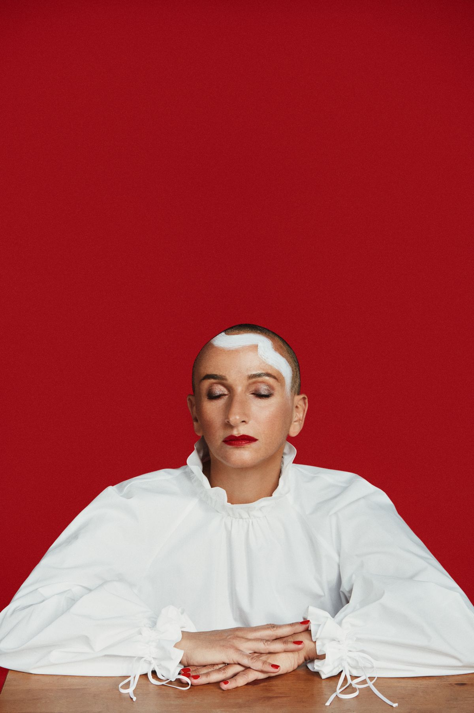
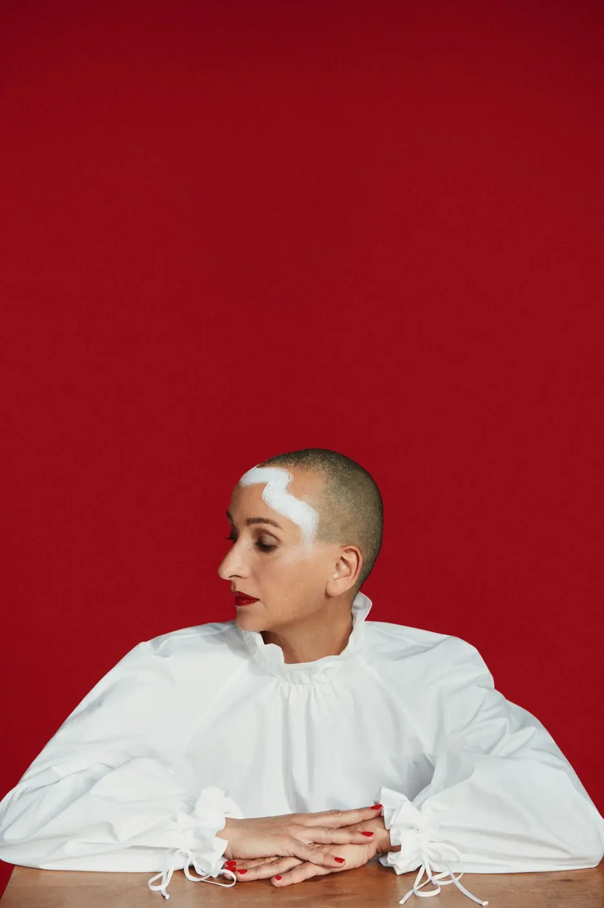
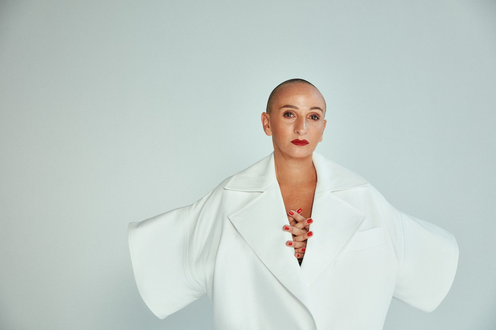

Portrait story of the artist Aidan Salakhova for Esquire: a white coat with sculptural sleeves, a red wall, a black stage and her own gestures.


I shoot covers and stories for magazines.
Working worldwide, remotely. Invoicing in USD or EUR.